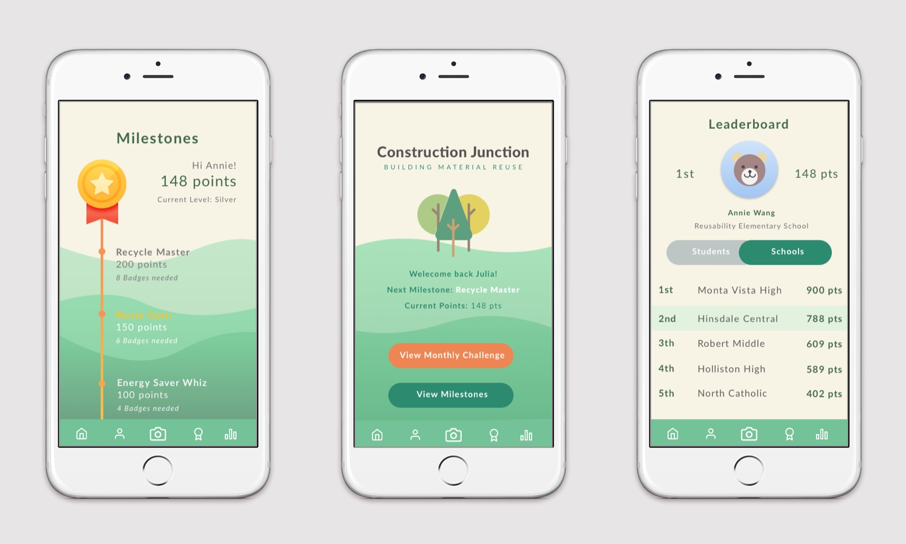
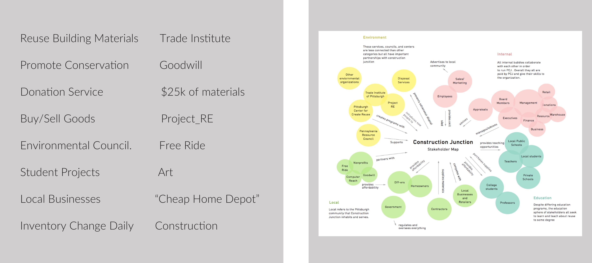
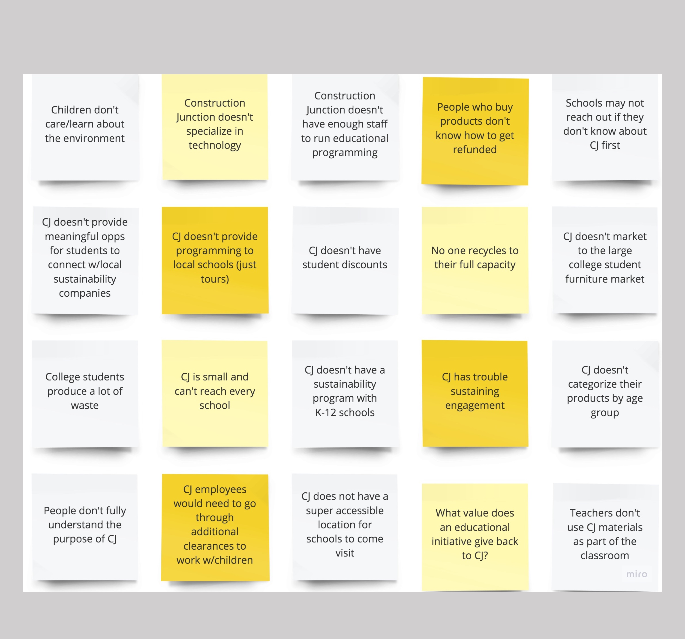

01 Overview
Quick Summary
Andrew Wang, Julia Luo
3 Weeks
Sketch, Framer, Photoshop, InDesign
UX Mobile Design + Branding + Strategic Pitch
Using a mobile application, how can we solve a problem faced by a local Pittsburgh company?
This project was part of my Advanced Interaction Design studio. Teams were randomly assigned to a local Pittsburgh company. My team was assigned Construction Junction, which is a large non-profit warehouse supplying surplus construction materials & appliances at reduced prices.
02 Solution
To address the knowledge gap in the communitu about Construction Junction's larger mission of promoting conservation and reuse, my team and I came up with Junction Journey: a mobile application geared towards kids that uses gamification and learning science principles to create a fun environment for children to learn about sustainability and conservation.
Application Basics
01 Competition with Other Schools
02 Learning about Furniture Reuse through microinteractions
03 Raising awareness about Reuse Events/Community Events
Junction Journey would not only be training the next generation, but would also be penetrating a much larger audience in Pittsburgh: schools and educators - simply by their interaction with children on a daily basis. Many Pittsburgh community members referred to Construction Junction as the “junkyard” or the “scrapyard.”
03 Initial Research
My team first tried to understand Construction Junction’s goals and business model to figure out where the opportunity space lay. We did some research on what Construction Junction was, including their mission and what products they sell. We additionally discussed their involvement with community organizations, since they are a non-profit organization.

Problem Discovery
After doing some analysis we realized that the Construction Junction business model has a two-fold purpose:
01 They make money by accepting donations and selling reused goods
02 Their underlying goal is to promote reuse and recycling in the Pittsburgh community through facility tours and workshops.
You can see this even by taking a quick look at their website- more than half of the information is dedicated to this mission of reuse.

To find areas of improvement in Construction Junction's two-part business model, my team and I conducted a comprehensive review of their social media channels, spoke with construction junction employees and shoppers, and also surveyed local Pittsburgh community members as to whether people even knew about Construction Junction.
Problem
My team first tried to understand Construction Junction's goals and business model to figure out where the opportunity space lay. We did some initial research on what Construction Junction is, including their mission and what products they sell. Additionally, there was discussion of their involvement with community organizations, since they are a nonprofit organization. Below is a list of key terms that kept coming up in our research.
Our Approach To address the knowledge gap in the community about Construction Junction's larger mission of promoting conservation, my team and I came up with Junction Journey: a mobile application for kids that uses game theory to create a fun environment for children to learn about sustainability and conservation. Through competing with other schools for sustainability challenges and learning about furniture reuse, Junction Journey would not only be training the next generation, but they would also be penetrating a much larger audience: schools and educators - simply by their interaction with children on a daily basis.

Some of the final screens showing the competitive nature
02 Exploratory Research
We first did some initial research on Construction Junction and how it fits in with the rest of the Pittsburgh community. Through our research, we found that Construction Junction is committed to raising awareness about sustainability and being environmentally friendly, outside of facilitating the reuse of goods. Currently, they have social media channels they use, but they don't get much traffic. Based on asking people in the community about their familiarity with Construction Junction, it seemed that many people did not know what Construction Junction was, unless they had a need for reused goods.
We then proceeded to build a stakeholder map of all parties giving and receiving. Larger bubbles indicate opportunities and overlaps represent parties that have some connection to each other. We noticed that there were a significant number of large bubbles under education and we had only seen a few postings for educational workshops and site visits on their social media. This was a huge opportunity to better connect with schools and educators, especially given the makeup of the Pittsburgh community - over 29 colleges and many more local high schools and lower education schools.

Our team came up with 20+ problem statements for why Construction Junction is not currently involved with the education sector. We then voted on which statements we were most interesting to solve and which would be the most impactful for increasing awareness of Construction Junction’s brand. The three we were interested in solving were:
1. Construction Junction doesn't have a virtual presence with the younger population of Pittsburgh.
2. Construction Junction doesn't have reusabiity drives at local schools
3. Schools don't understand exactly what Construction Junction can do for them/how they could benefit
From this, we synthesized them into one single problem statement:
Construction Junction doesn't have a virtual presence with local students in Pittsburgh to share and engage them in their vision.

My research began with learning about the use cases of Playbook, the current features, and the way the current interface works. I asked my teammates several questions and asked them to demo particular actions for me as well. My team also gave me access to a tester site so I could play around with features and user flows on my own, which was really crucial in problem discovery.


03 System Design
As I was playing around with the tester site, I noticed that it took a considerable number of clicks to commit to a certain action. I noticed this had a lot to do with the design of the Playbook system, specifically having an action tray - a tray that pops out when you need to make edits to the schedule. Before going into my main tasking, I decided to see if we could clean up the user flow of editing something.
03 Research Synthesis
We then brainstormed questions we could answer to address our problem statement and solidify our mobile service model. The ones highlighted below led us into understanding some key opportunities for increasing awareness through a mobile application.

04 Concept Development
Based on the research synthesis, we came up with a few key ideas for why a mobile application might be successful:
Targeting Word of Mouth Marketing
Construction Junction already has all the social media platforms and is still getting pretty limited engagement. We need to introduce something that people will talk about, since 28% of consumers say word of mouth marketing is the most important factor in strengthening or eroding brand affinity.
Targeting Middle School Age Children
Pittsburgh has a large number of universities, making it a great idea to target college campuses. However, by targeting middle school children,we will also we targetting those involved with students (parents, teachers, coaches, etc.)
Gamifying the Experience for Children
Since we are targeting middle school age children for a topic like conservation/sustainability we need to engage them and continuously do so, which is why we decided to make the mobile application a game.

05 Ideation
Next comes the ideation phase - lots of sketching, round robin brainstorming, and looking at the problem from many different angles! Our initial step was to make a list of priorities for both the children and Construction Junction.

Here are some of the images from our round robin brainstorming session and some of the concepts that led to the creation of our low-fi prototypes/

06 Iteration
We then brainstormed questions we could answer to address our problem statement and solidify our mobile service model. The ones highligthed below led us into understanding some key opportunities for increasing awareness through a mobile application.
07 Final Design
We then brainstormed questions we could answer to address our problem statement and solidify our mobile service model. The ones highligthed below led us into understanding some key opportunities for increasing awareness through a mobile application.